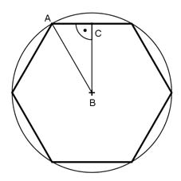

Aufgabe 237 Ein Werkzeugmacher soll aus einem Kegel mit einem Radius von 10 cm, einer Höhe von 25 cm und einer Dichte von 8,4 g/cm3 die größtmögliche regelmäßige sechseckige Pyramide herstellen. Wie groß ist der Abfall A in kg?

In einem regelmäßigen Sechseck sind die Seiten gleich lang wie der Radius. Satz von Pythagoras im Dreieck ABC: AB = r = 10 cm BC = h AC = r/2 = 10 cm/2 = 5 cm r2 = h2 + (r/2)2 | -(r/2)2 h2 = r2 - (r/2)2 h2 = 102 cm2 - 52 cm2 h2 = 75 cm2 |√ h = 8,66 cm Sechseckgrundfläche G: 10 cm * 8,66 cm G = 6 * ------------------- = 259,8 cm2 2 л * r2 * hKegel VKegel = ------------------- = 3 л * 102 cm2 * 25 cm = ---------------------- = 2 616,7 cm3 3 G * hKegel VPyramide = ------------ = 3 259,8 cm2 * 25 cm = -------------------- = 2 165 cm3 3 ΔV = VKegel - VPyramide = = 2 616,7 cm3 - 2 165 cm3 = 451,7 cm3 m = V * ρ = 451,7 cm3 * 8,4 g/cm3 = = 3 794 g = 3,79 kg